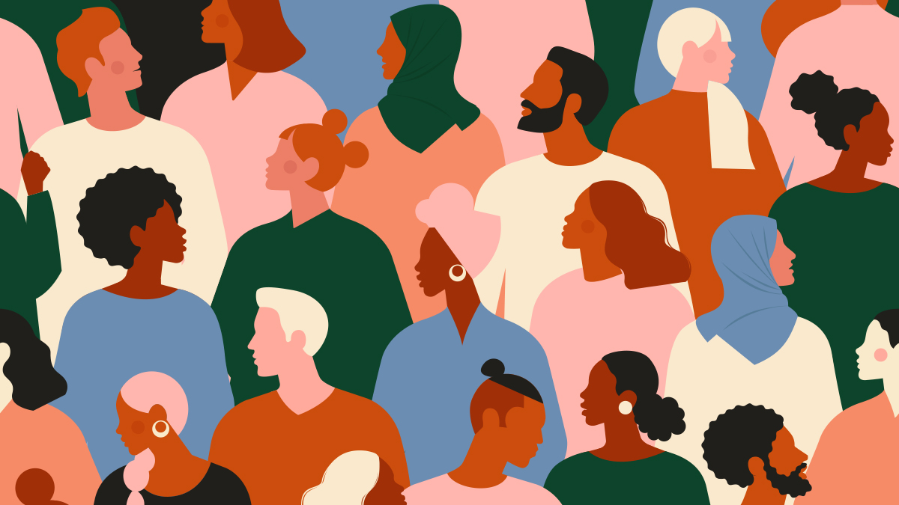
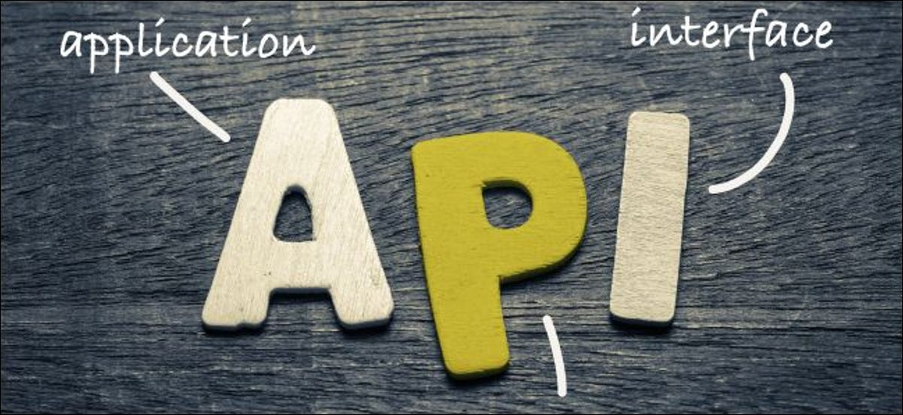

The racial exclusion of images.
In my project, I have included 4 APIs for the main purpose of investigating how available images are represented by internet algorithms. I coded an investigative series of APIs, that mainly pull images from online according to varying search keywords.
The first API uses https://api.pexels.com as a source of images. The API then filters the images that according to the search word. There are two striking scenarios when using this API. The first keywork that I implore people to try, is the word “Europe”. The search result return beautiful architecture, landscapes, and general scenery. The second keyword that used is “Africa”. This search result mainly returns animals, chaotic images of open markets, and often dirty children.
Internet binaries
This is a stark example of internet binaries, where hominization of places is evident in information geographies. Not all is rosy and well-manicured in Europe, and not all is dirty, and Africa is not predominantly made of wildlife. If it were true that the magnetoactive feature in Africa is animals, then the search result about Australia should also be animals.
For this API, I will continue with the example of Africa. This API is programmed to return results of five predefined search keywords. The first keywork is wildlife in South Africa, which return positive results all 99% of the time. The second search string uses two keywords “children and South Africa”. Almost half of the time, this search returns null incorrect results, or images of white children. If the predefined keywords are changed to children and Africa, again, the images of dirty African children are returned by the API.
Further manipulating the API by changing the search keywords to children and America, returns images of white health and clean children. The interesting issue here is that this API still excludes black children, even if the code I made does not specify this.
Cats and Dogs under the portfolio link :https://aws.random.cat/meow, https://random.dog/woof. Ok, let us leave people for now and stick to animals and places. The cats and dogs API is meant to fetch and return images of cats and dogs around Johannesburg. When fetching dogs and cats, the images that are returned when the pets are with their owners, is images of animals with white people.
The weather API .
The weather API that I set is made to return images of people according to the weather that a user would have searched for. Search results for the Johannesburg weather still returned more white people than black people.
Algorithms
Algorithms of Oppression: How Search Engines Reinforce Racism, Safiya Umoja Noble draws on her research into algorithms and bias to show how online search results are far from neutral, but instead replicate and reinforce racist and sexist beliefs that reverberate in the societies in which search engines operate. This timely and important book sheds light on the ways that search engines impact on our modes of understanding, knowing, and relating, writes Helen Kara.
Conclusion.
Drawing from Safiya’s work, I conclude that sometimes algorithms are codes that grow and adapt according to information geographies. Maybe this is the effect of the global south not inputting enough information to be consumed by the global north.
Bibliography
https://source.unsplash.com
https://api.pexels.com